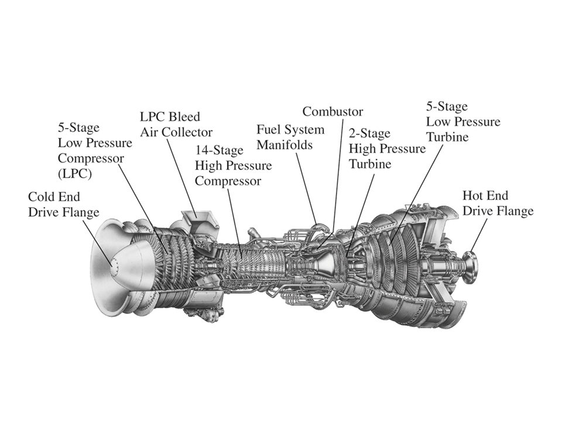
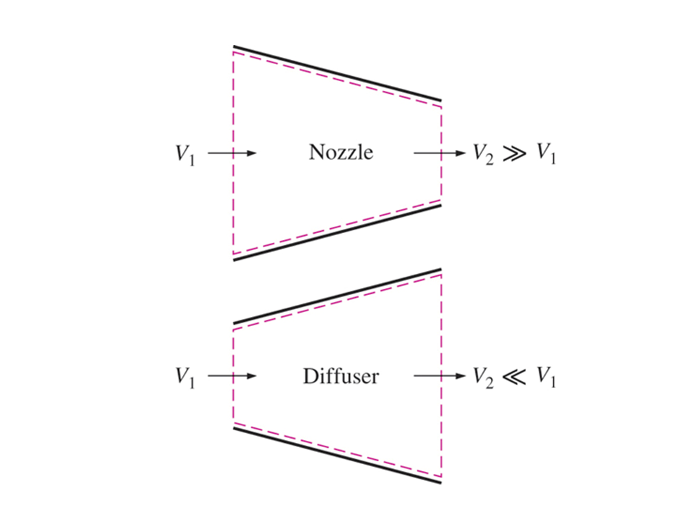
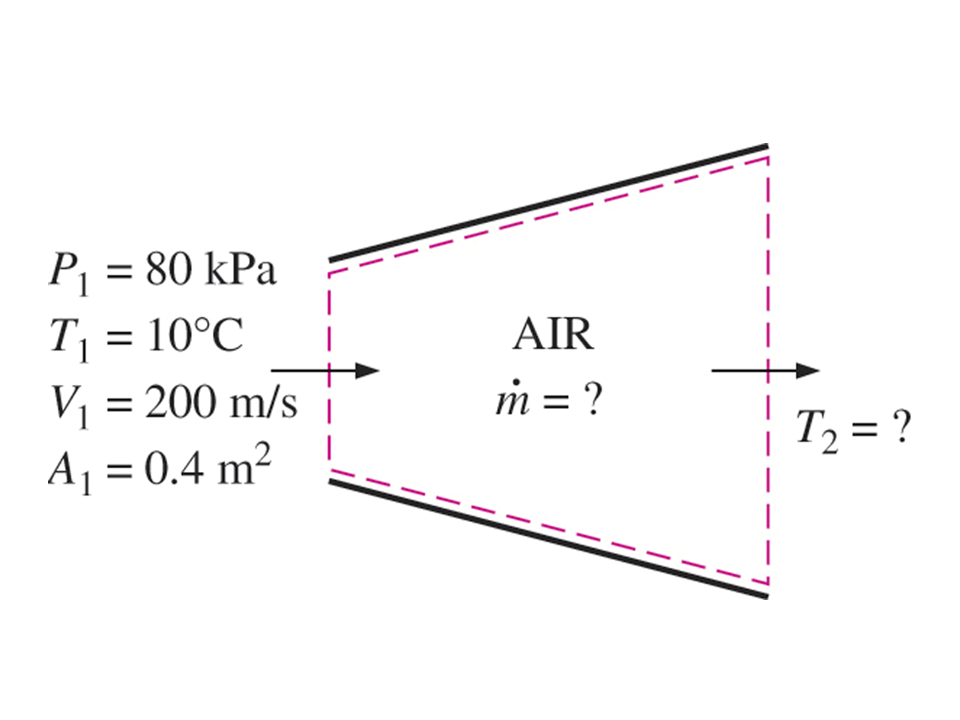
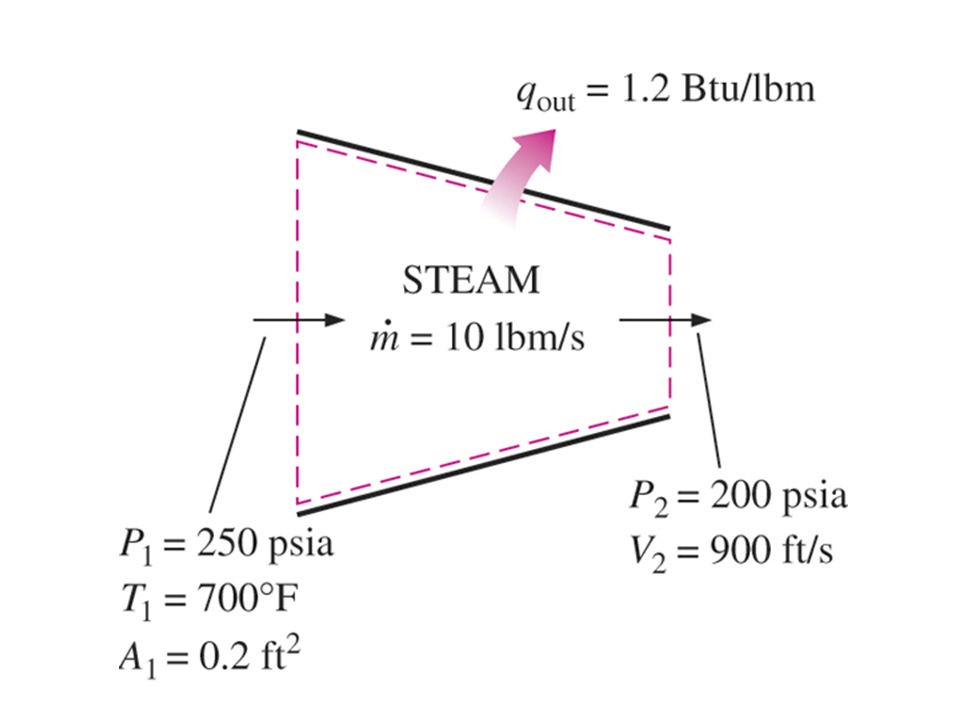
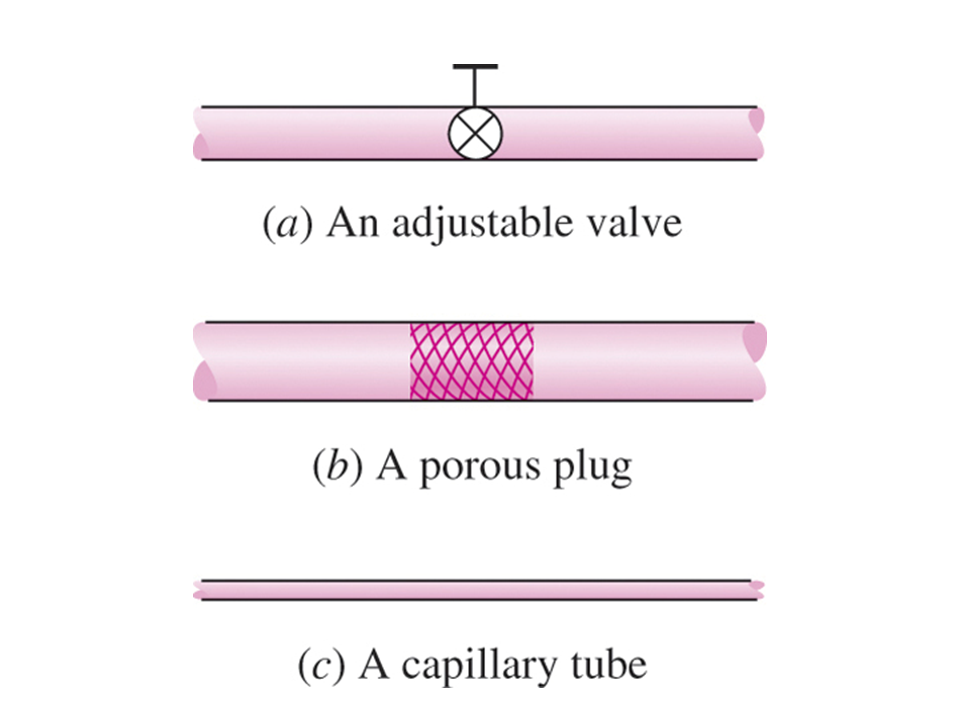
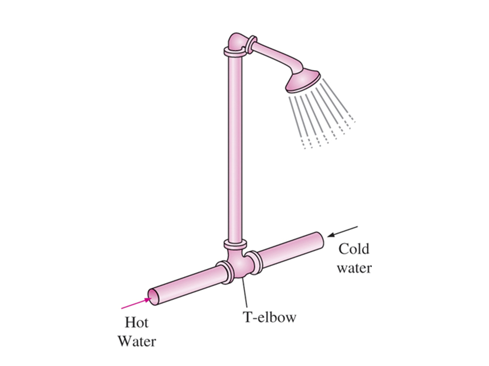
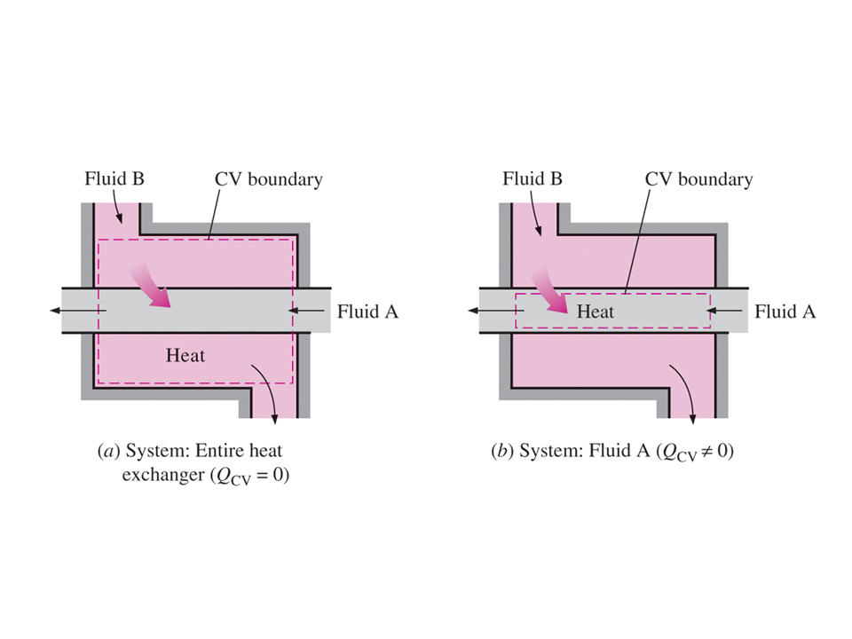
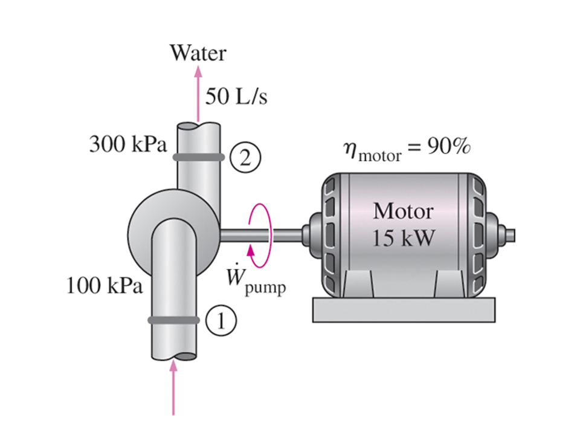

Revisa la Bibliografía recomendada en la sección Fuentes de Información del curso.
Notas para la clase.
Algunos dispositivos de ingeniería de flujo estacionario
A continuación se presentan algunos dispositivos de ingeniería que funcionan esencialmente como volúmenes de control de flujo estacionario y de estado estacionario.

Boquillas y Difusores

Para el flujo a través de toberas, la transferencia de calor, el trabajo y la energía potencial generalmente se desprecian y solamente tienen una entrada y una salida. La conservación de la energía se convierte en
$$ \dot{m}_1 = \dot{m}_2 $$ $$ \dot{m}_1 = \dot{m}_2 = \dot{m} $$ $$ \dot{E}_1 = \dot{E}_2 $$o
$$ \dot{m} (h_1 + \frac{v_1^2}{2} = \dot{m} (h_2 + \frac{v_2^2}{2}) $$resolviendo para $v_2$
$$ v_2 = \sqrt{2 (h_1 - h_2) + v_1^2} $$Turbinas

Si ignoramos los cambios en las energías cinética y potencial a medida que el fluido fluye a través de una turbina adiabática que tiene una entrada y una salida, la conservación de la masa y la primera ley en estado estacionario y flujo estacionario se convierte en
$$ \dot{m}_1 = \dot{m}_2 $$ $$ \dot{m}_1 = \dot{m}_2 = \dot{m} $$ $$ \dot{E}_1 = \dot{E}_2 $$ $$ \dot{m}_1 h_1 = \dot{m}_2 h_2 + \dot{W}_s $$ $$ \dot{W}_s = \dot{m} (h_1 - h_2) $$
Compresores y Ventiladores

Los compresores y los ventiladores son esencialmente los mismos dispositivos; sin embargo, los compresores funcionan con mayores relaciones de presión que los ventiladores. Si ignoramos los cambios en las energías cinética y potencial a medida que el fluido fluye a través de un compresor adiabático que tiene una entrada y una salida, la primera ley en estado estacionario y flujo estacionario o ecuación de conservación de la energía se reduce a
$$ - \dot{W}_{\text{neto}} = \dot{m} (h_2 - h_1) $$ $$ - (- \dot{W}_{e}) = \dot{m} (h_2 - h_1) $$ $$\dot{W}_{e} = \dot{m} (h_2 - h_1) $$
Dispositivos de estrangulamiento

Considere un fluido que fluye a través de un tapón poroso dentro de un ducto con una entrada y una salida; el fluido experimenta una caída de presión a medida que fluye a través del tapón; además, el fluido no realiza ningún trabajo neto. Suponga que el proceso es adiabático y que se desprecian las energías cinética y potencial; entonces, las ecuaciones de conservación de masa y energía se convierten en
$$ \dot{m}_1 = \dot{m}_2 $$ $$ \dot{m}_1 = \dot{m}_2 = \dot{m} $$ $$ \dot{m}_1 h_1 = \dot{m}_2 h_2 $$ $$ h_1 = h_2 $$Este proceso se denomina proceso de estrangulamiento. ¿Qué sucede cuando se estrangula un gas ideal? Se tiene que
$$ h_1 - h_2 = 0 $$o bien
$$ \int_e^s c_p(T) dT = 0 $$o
$$ T_e = T_s $$Al estrangular un gas ideal, la temperatura no cambia. Se puede ver más adelante como en el Capítulo 10 del Cengel o equivalente de los libros de texto, que el proceso de estrangulamiento es un proceso importante en el ciclo de refrigeración.
Cámaras de mezclado
La mezcla de dos fluidos ocurre con frecuencia en aplicaciones de ingeniería. La sección donde tiene lugar el proceso de mezclado se denomina cámara de mezclado. La regadera ordinaria de los sanitarios en los hogares es un ejemplo de cámara de mezclado.

Intercambiadores de calor
Los intercambiadores de calor son normalmente dispositivos bien aislados que permiten el intercambio de energía entre fluidos calientes y fríos sin mezclar los fluidos. Las bombas, ventiladores y sopladores que hacen que los fluidos fluyan a través de la superficie de control normalmente se ubican fuera de la superficie de control.

Flujo de tuberías y ductos
El flujo de fluidos a través de tuberías y ductos es a menudo de estado estacionario y flujo estacionario. Normalmente despreciamos las energías cinética y potencial; sin embargo, dependiendo de la situación del flujo, el trabajo y la transferencia de calor pueden o no ser cero.
Bombas de líquido

El trabajo requerido cuando se bombea un líquido incompresible en un proceso adiabático de estado estacionario y flujo estacionario está dado por
$$ \dot{Q}_{neto} - \dot{W}_{neto} = \dot{m} (h_2 - h_1 + \frac{v_2^2}{2} - \frac{v_1^2}{2} + g z_2 - g z_1) $$La diferencia de entalpía se puede escribir como
$$ h_2 - h_1 = (u_2 - u_1) + [(p v)_2 - (p v)_1] $$Para líquidos incompresibles suponemos que la densidad y el volumen específico son constantes. El proceso de bombeo de un líquido incompresible es esencialmente isotérmico y el cambio de energía interna es aproximadamente cero (se verá más claramente después de estudiar la segunda ley). Por lo tanto, la diferencia de entalpía se reduce a la diferencia en los productos de volumen específicos de la presión. Dado que $v_2 = $v_1 = v$, la entrada de trabajo a la bomba se convierte en
$$ - \dot{W}_{neto} = \dot{m} (v (p_2 - p_1) + \frac{v_2^2}{2} - \frac{v_1^2}{2} + g z_2 - g z_1) $$Aquí, $\dot{W}_{neto}$ es el trabajo neto realizado por el volumen de control, y se observa que se ingresa trabajo a la bomba; entonces, $\dot{W}_{neto} = - \dot{W}_\text{e,bomba}$. Si despreciamos los cambios en las energías cinética y potencial, el trabajo de la bomba se convierte en
$$ - (- \dot{W}_\text{e,bomba}) = \dot{m} [v (p_2 - p_1)] $$ $$ \dot{W}_\text{e,bomba} = \dot{m} [v (p_2 - p_1)] $$Este resultado lo usamos, por ejemplo, para calcular el trabajo suministrado a las bombas de agua de alimentación de calderas en plantas de energía de vapor.